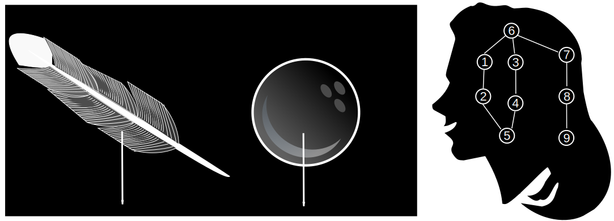
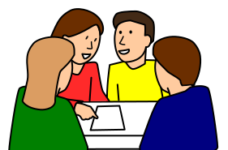
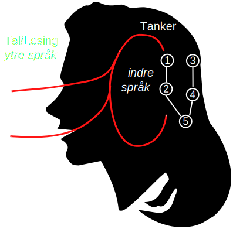

Et pedagogisk grunnlag for videre utvikling
1. juni 2016
Et pedagogisk grunnlag for videre utvikling
Oversikt
- Verdi bak motivasjonen
- Min praksis teori
- Før jeg startet PPU
- Første praksisperiode Elvebakken
- Andre praksisperiode Ski videregående
- Tredje praksisperiode Oslo katedralskole
- Fremtidige perspektiv for meg som lærer
Mestring er en verdi som har drevet min profesjonelle motivasjon
Opplæringens mål er å ruste barn, unge og voksne til å møte livets oppgaver og mestre utfordringer sammen med andre. Den skal gi hver elev kyndighet til å ta hånd om seg selv og sitt liv, og samtidig overskudd og vilje til å stå andre bi. Generell del av læreplanen, LK06 (1993)
Mestring er en verdi som driver min profesjonelle motivasjon sammen med andre!
Opplæringens mål er å ruste barn, unge og voksne til å møte livets oppgaver og mestre utfordringer sammen med andre. Den skal gi hver elev kyndighet til å ta hånd om seg selv og sitt liv, og samtidig overskudd og vilje til å stå andre bi. Generell del av læreplanen, LK06 (1993)
Jeg skal her gjøre rede for min praksisteori slik den har utviklet seg gjennom PPU studiet
Praksisteori er "en persons private, sammenvevde, men stadig foranderlige system av kunnskap, erfaring og verdier som til enhver tid har betydning for personens undervisningspraksis" (Lauvås og Handal 1999 s.14)
Praksisteorin før jeg startet PPU var preget av min oppvekst som barn av to lærere og fra min bakgrunn i akademia
|
|
|
Før praksis og PPU sammenføll mitt syn på hva læring er til stor del med Piagets kognitiva skjema
- Man opplever den utanforstående verden basert på forutintattet kunskaper: indre skjeman
- Objekter med større tyngd faller til jorden med større fart enn lettere objekter 1-2-5
Ny kunnskap assmileres til eksisterende skjeman hvis de ikke bryter mot de ekisterende skjemane

- Man opplever den utanforstående verden basert på forutintattet kunskaper: kognitive skjeman
- Objekter med større tyngd faller til jorden med større fart enn lettere objekter
- Et løv vil derfor falle saktere mot marken en en 10 kg tyngde
Ny kunnskap assmileres til eksisterende skjeman hvis de ikke bryter mot de ekisterende skjemane
- Man opplever den utanforstående verden basert på forutintattet kunskaper: indre skjeman
- Objekter med større tyngd faller til jorden med større fart enn lettere objekter
- Et løv vil derfor falle saktere mot marken en en 10 kg tyngde
- Og en fjær vill falle saktere enn en bowlingkule
Hvis vi pumper ut luften fremprovoserer vi en kognitiv ubalanse
- Fjæren faller like fort som bowling kulen!
Ubalansen rettes opp gjennom å utvidge skjemaet

- Objekter som bare påvirkes av tyngdekraften faller like fort!
På min første praksis på elevebakken var temat Energi og mitt fokus var å skape ubalanse i de kognitive skjema
|
|
|
- Det gamle skjemaet om energi var elevenes forkunskaper om temaet
- Den kognitive ubalansen skapades gjennom å vise på forskjellen mellom kvalitative og kvantitative relasjoner for energi
Jeg fikk gode respons fra elevene men...
- Enlig praksislærene mine brukte jeg allt for mye tid på lærerstyrd forelesning
- Jeg fikk klar besked om at elevene må ha mer tid med egen regning og samsnakking
Jeg brukte samarbeidslæring som en del av min andre praksis på Ski for temat: føring av selvangivelse i 1P
- Vi lagde opplegget basert på utforskende arbeidsmåter
Sosialinteraksjon mellom elevene hjelpte de å lære seg komplekse sammenhenger med mange nye begreper

- Den utforskende arbeidsmåten læt elevene oppdage begreppene selve
- Gjennom å ta utgangspunkt i hverandres forståelse av selvangivelse mener jeg at de klarte å lære seg mer enn om jeg som lærer hadde fortalt de om de ulike begrepene
"Hva et barn kan gjøre med samarbeid idag kan den gjøre selv imorgen" Vygotski 1934
- Hvor Piaget såg på læring som et resultat av den enkeltes utforskning mente Vygotski at læring starter med en sosial aktivitet
- Læring skjer når en som kan mer strekker seg mot den som skal lære
- All læring er en del av kulturen og den tar bolig i oss gjennom språket
Vygotski tenker ikke at den abstrakte lærdommen er språklige strukturer men at den formidles gjennom språk
|

|
Den siste praksisen var fokuset på å hjelpe minoritetsspråkelige elever med leseveiledning i realfag
|
|
Jeg brukte to ulike leseveiledningsmetoder to-kolonnenotat og prosessnotat men fikk dessverre for lite tid til å gjennomføre det ordentlig
|
to-kolonnenotat Jada bada snada bsa
|
prosess notat Jada bada snada bsa
|